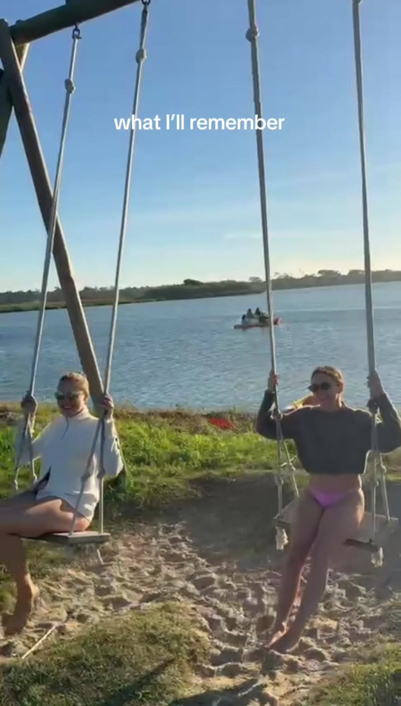
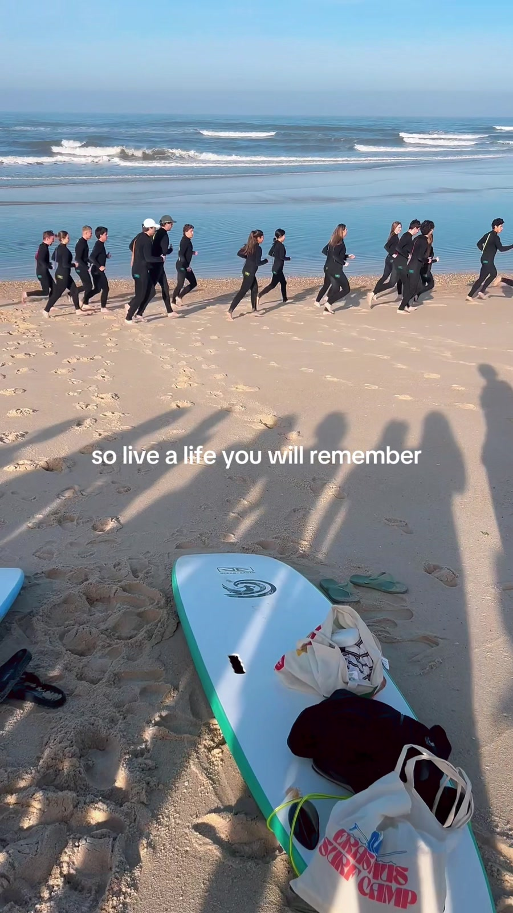
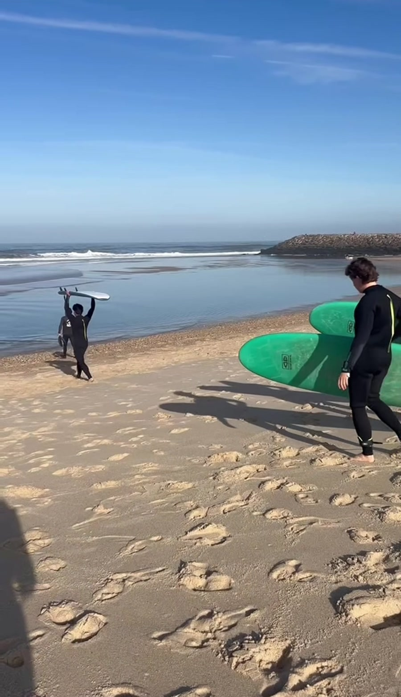
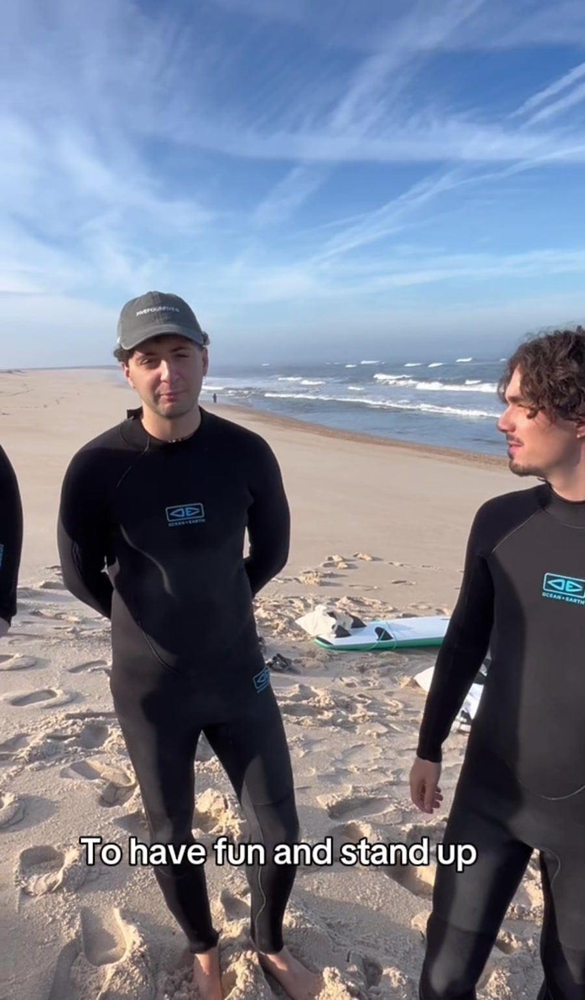
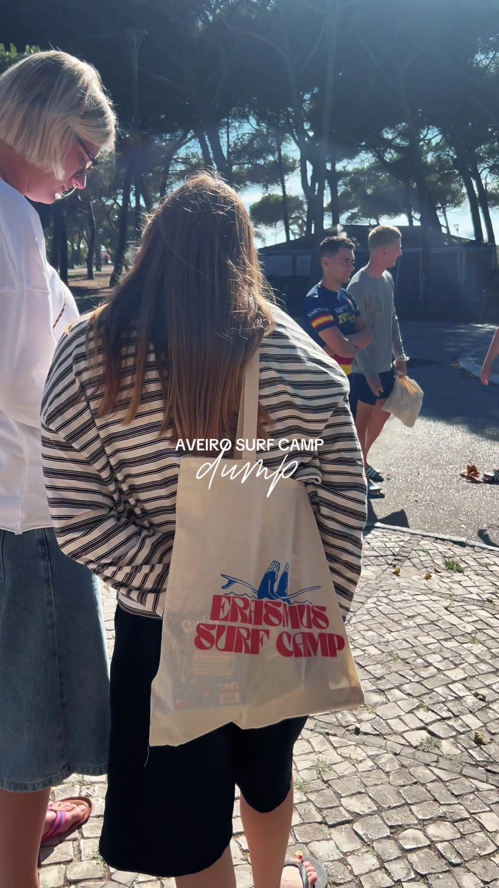
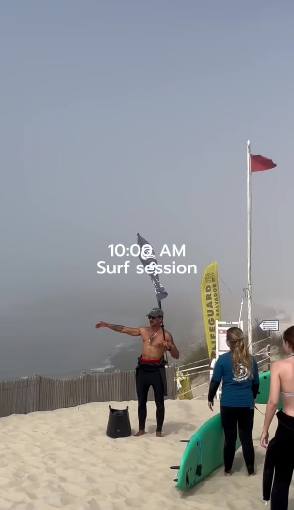

Machine Learning · GIS
View on GitHub ↗
Coastal Cliff Prediction ML
Machine learning application to predict the presence or absence of coastal cliffs along the Cilento coastline, using geospatial data and QGIS.
Hi, I'm Giusy. I am a Digital Humanities student interested in the intersection of technology, digital communication and creative thinking. This portfolio brings together selected projects and experiences across technical development, content creation and digital marketing.
Explore my work ↗A selection of academic and personal projects exploring programming, machine learning, geospatial analysis and interactive digital experiences.
Machine learning application to predict the presence or absence of coastal cliffs along the Cilento coastline, using geospatial data and QGIS.
Python application for managing a music school, developed using object-oriented programming principles.
Virtual reality project developed with Unity, exploring immersive digital experiences.
iOS application prototype designed to support Italian Sign Language learning, developed during the Apple Foundation Program.
Creating visual content is an opportunity to tell stories, communicate experiences and connect with audiences. My work includes photography, video editing and social media content for travel and surf camp experiences.
Photo and video production, Instagram Stories and short-form video editing to document surf sessions, activities and experiences during camp programmes.

What I'll Remember
Remember What Avicii Said
POV: Surf Camp Experience
Surf Camp Interviews
Aveiro Surf Camp Dump
A Typical Day at the Surf CampExploring how content, data and digital tools can work together to build effective communication strategies and improve online visibility.
SEO activities, WordPress content management and website performance analysis for a travel brand. Working with search visibility, content optimisation and editorial planning.
A university project focused on content strategy, exploring audience needs, communication objectives, content planning and digital channels.